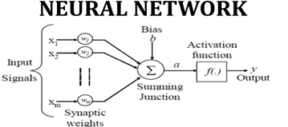
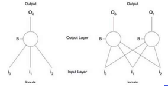

A. Sinapsis
B. Dendrit
C. Axon
D. Cell Body (kumpulan cell)
A. Pengali
B .Penambah
C. Selisih
1. Pengetahuan yang diperoleh Jaringan Syaraf Tiruan melalui proses belajar (learning)
2. Kekuatan hubungan antara neuron yang dikenal dengan sypnatic weights digunakan untuk menyimpan pengetahuan
Metode pembelajaran ini merupakan metode belajar dari contoh yang benar. Dalam metode ini jaringan syaraf tiruan tidak belajar sendiri tetapi diajarkan melalui contoh-contoh tersebut. Contoh algoritma : Backpropagation, Least-Mean Squared.
Metode ini jaringan syaraf tiruan tidak diberikan contoh-contoh yang benar tetapi mengandalkan analisa jaringan syaraf tiruan mengenali kesamaan dan perbedaan antara data-data input. Contoh algoritma : k-means Clustering, Kohonen, ART